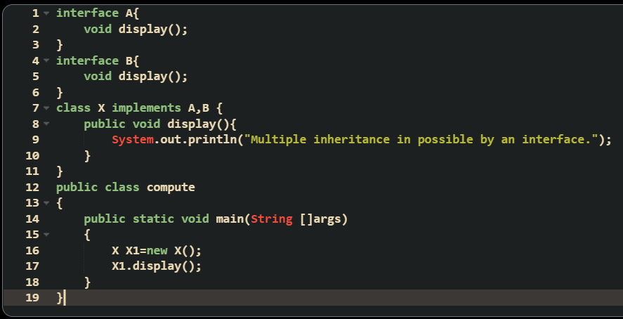

An abstract class is a restricted class that is declared abstract and cannot be instantiated, but they can be subclassed.
Abstract class provides partial abstraction.
Data abstraction is the process of hiding certain details and showing only essential information to the user. Abstraction lets us focus on what the object does instead of how it does it.
There are two ways of abstraction in java.
An abstract class is a restricted class that is declared abstract and cannot be instantiated, but they can be subclassed.
Abstract class provides partial abstraction.
An Interface is a type of class that contains abstract methods and final fields (members) by default.
Interface provided absolute abstraction.

It is an interface that is not nested in any class or interface. It comprises a collection of abstract methods. It can contain any number of methods that are needed to be defined in the class.
It is an interface that is defined in the body of a class or interface. In nested interfaces one or more interfaces are grouped, so that it becomes easy to maintain. It is referred to by the outer interface or class and cannot be accessed directly.
Like a class, an interface is generic if it declares one or more types of variables . It comprises methods that accept or return an object. Thus, we can pass any parameter to the method that is not of the primitive type.
Multiple inheritance is not supported in the case of class because of ambiguity. However, it is supported in case of an interface because there is no ambiguity. It is because its implementation is provided by the implementation of class.
 Test it yourself!If a program has an interface(I) and a class(C), then the interface can be implemented by the class.
An interface can be extended from another interface but it cannot be implemented from it. Since a class is having real time existence but an interface is not, atleast one class is required which will implement the concept of the 2 interfaces.
If a program contains 2 interfaces, both a class and an interface can be created from it. But in case of an interface (III) a class is required down to it.
In java a class cannot be created from 2 classes since it does not allow multiple inheritance.
A class that implements an interface must define all the abstract methods of the interface. If at a later stage it is required to introduce another abstract method to the interface, then all the classes implementing the interface must be modified.
The enhancement in Java 8 spares the programmer from doing any change in the existing classes that implement the interface by allowing the interface to have full definition of default methods and static methods that are implicitly inherited by the class implementing the interface.
Default interface methods allow us to add new methods to an interface that are automatically available in the implementations.
A static method is a class method which can be called with the class name. A class that implements an interface also inherits all its static methods.
| Abstract Class | Interfaces |
|---|---|
| Abstract class can have abstract and non-abstract methods. | Interface can have only abstract methods. |
| Abstract class doesn't support multiple inheritance. | Interface supports multiple inheritance. |
| Abstract class can have final, non-final, static and non-static variables. | Interface has only static and final variables. |
| Abstract class can provide the implementation of interface. | Interface can't provide the implementation of abstract class. |
| The abstract keyword is used to declare abstract class. | The interface keyword is used to declare interface. |
| An abstract class can extend another Java class and implement multiple Java interfaces. | An interface can extend another Java interface only. |
| An abstract class can be extended using keyword "extends". | An interface can be implemented using keyword "implements". |
| A Java abstract class can have class members like private, protected, etc. | Members of a Java interface are public by default. |